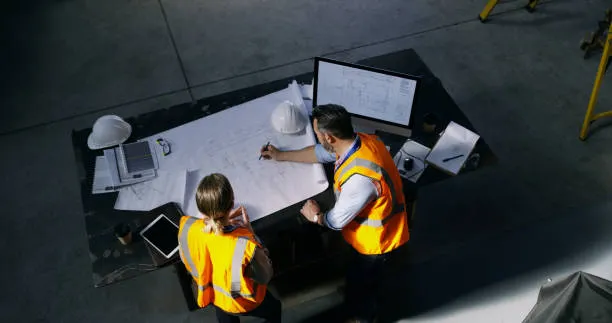

Objetivos Educacionales

Los objetivos educacionales del programa describen los logros que se espera alcancen los egresados en 3 ó 4 unos años después de su egreso y .están basados en las necesidades de los grupos de interés del programa. Se declaran de una forma amplia y generalmente se valoran a través de mecanismos de seguimiento de la trayectoria de los egresados del programa.
Estos objetivos constituyen una visión del éxito de los egresados del programa y representan una aspiración para los estudiantes que lo cursan o que están considerando ingresar al mismo.
Puntos relevantes
- Los egresados del programa de Ingeniería Industrial tendrán la capacidad para integrarse en la sociedad como profesionales en la práctica de la Ingeniería Industrial como consecuencia de su formación profesional para diseñar, implementar, administrar, gestionar y mejorar sistemas productivos de bienes y servicios.
- Los egresados del programa de Ingeniería Industrial tendrán la capacidad de integrarse en los sectores productivos en un área profesional distinta a su carrera.
- Los egresados del programa de Ingeniería Industrial estarán participando en programas de formación continua, certificaciones o programas de posgrado para mantenerse actualizados en la formación científica básica y de ingeniería que reciben en el programa. MATERIAS SEGÚN LAS ESPECIALIDADES: